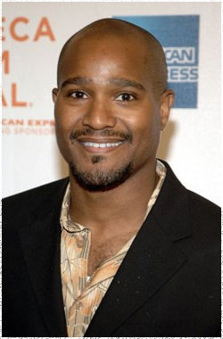

Сет Гиллиам
 Отец Габриэль Стокс (актёр Сет Гиллиам) - культовый персонаж из графического романа, это духовный человек, который только начинает сталкиваться с истинами этого тёмного мира.
Гиллиам получил признательность за свою роль в приветствуемом критиками сериале канала HBO Прослушка с Чадом Коулманом и Лоуренсом Джиллиардом, которые также входят в актёрский состав Ходячих мертвецов, и фильмах Звездный десант с Каспером Ван Дином и Нилом Патриком Харрисом, Мужество в бою с Дензелом Вашингтоном, Мэг Райан и Мэттом Дэймоном.
Гиллиам получил свою первую повторяющуюся телевизионную роль играя Аарона Декстера в классическом сериале Шоу Косби. Его остальные телевизионные роли включают: Тюрьма «ОZ», Оборотень, Избиение в Вест-пойнте, The Bronx Is Burning, Народ против Лео Франка и гостевые роли в сериалах: Родина, Схватка, Сестра Джеки, Закон и порядок, Закон и порядок: Преступное намерение, CSI: Майами, В поле зрения, Мыслить как преступник и Правильная жена.
Роли Гиллиама в кино включают: Супруги Морган в бегах, Панки, Джефферсон в Париже и Персональное ускорение.
Гиллиам также появился в многочисленных сценических постановках, включая: Король Лир, Отелло, Отец возвращается домой с войны, Ромео и Джульетта и Ричард III.
Наиболее известен по фильмам:
Прослушка
Оборотень
Звездный десант
Мужество в бою